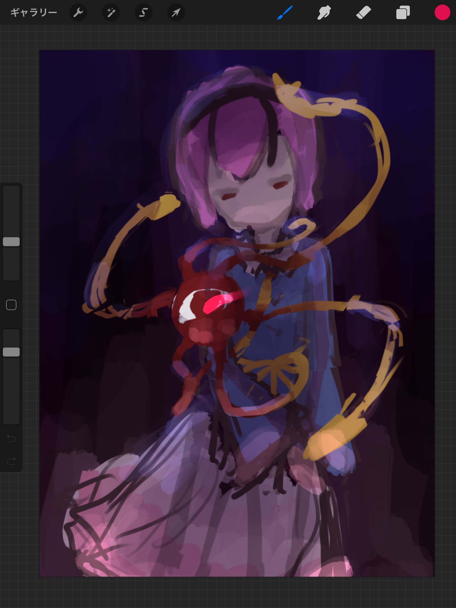
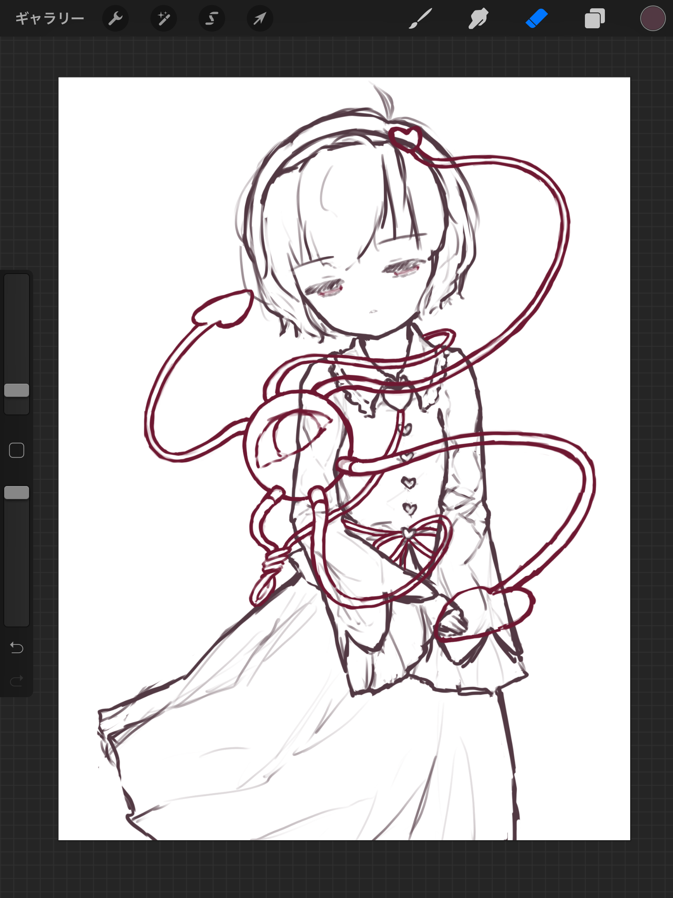
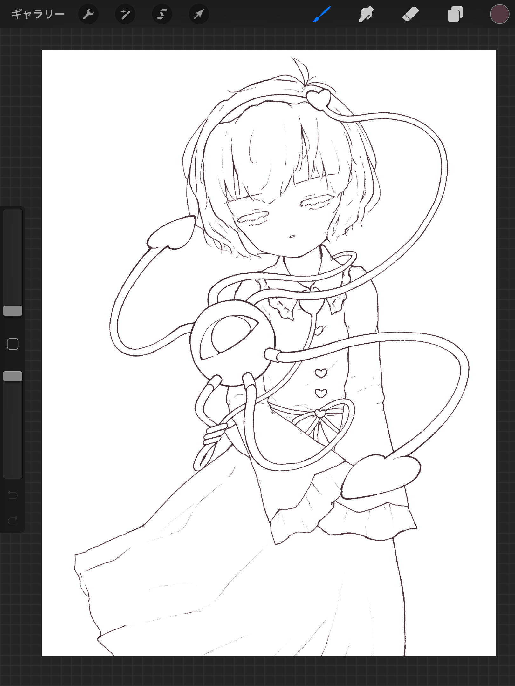
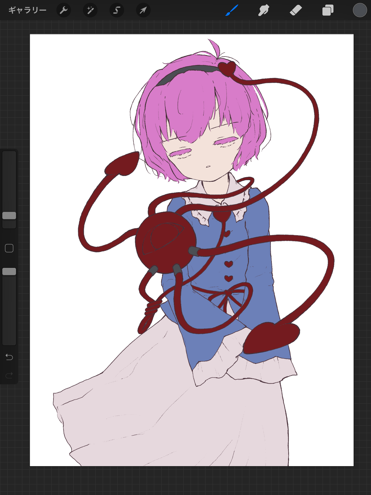
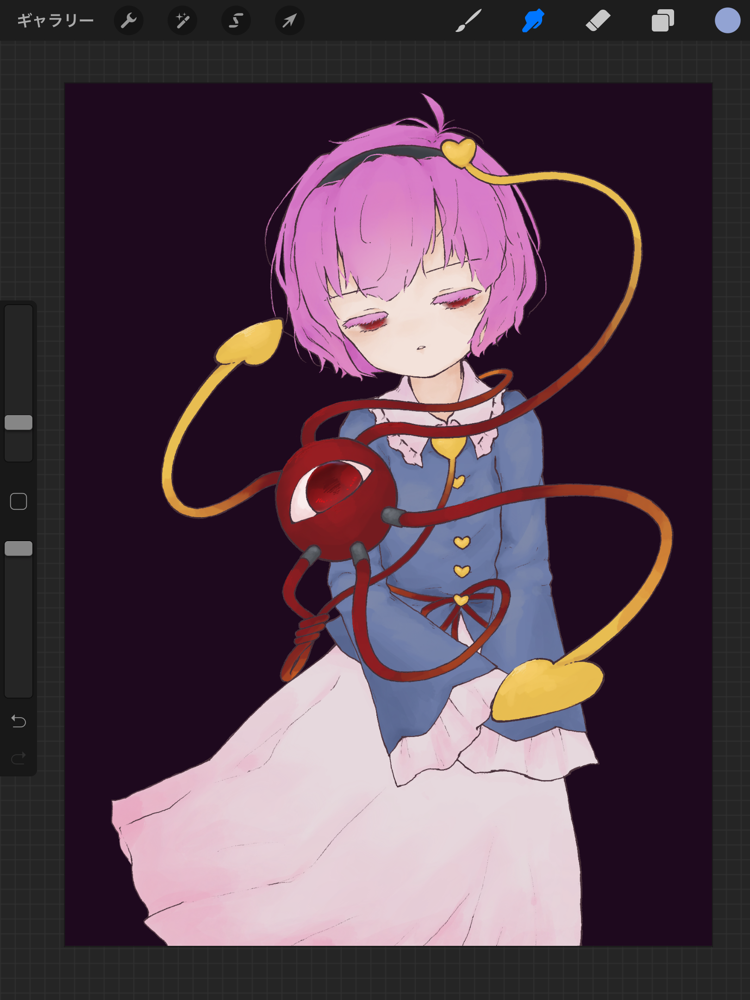
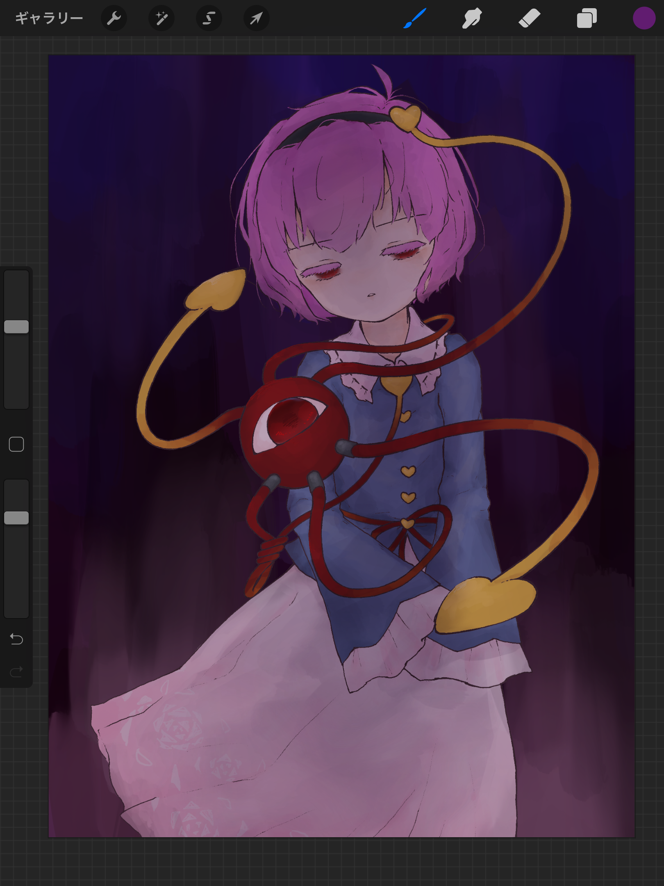
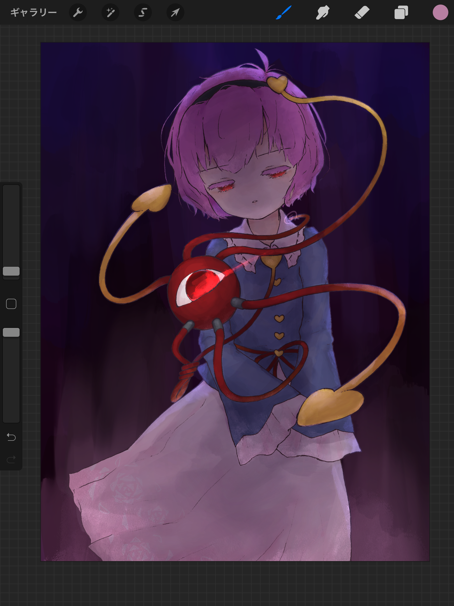
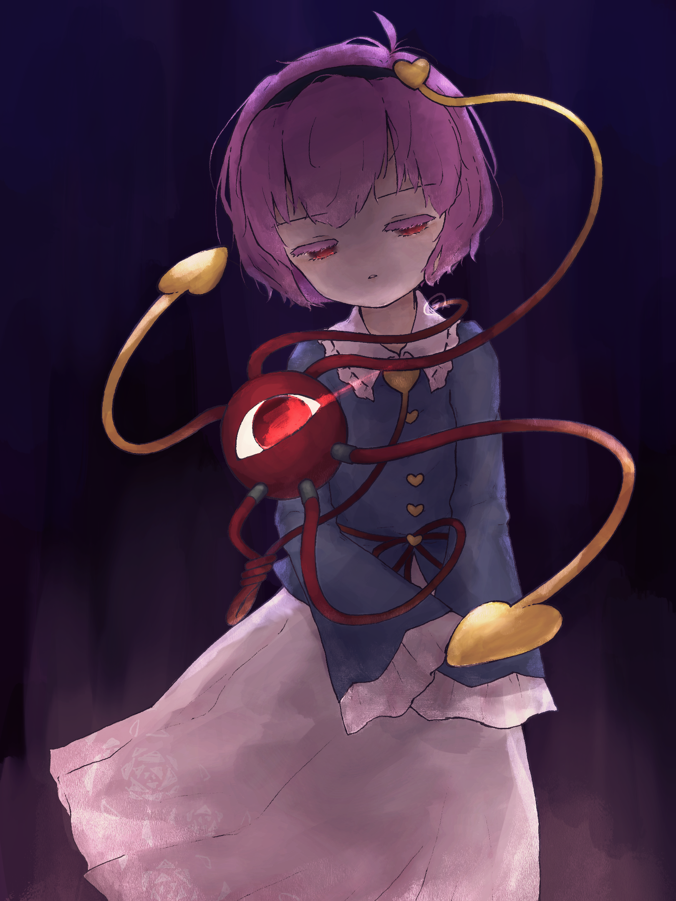
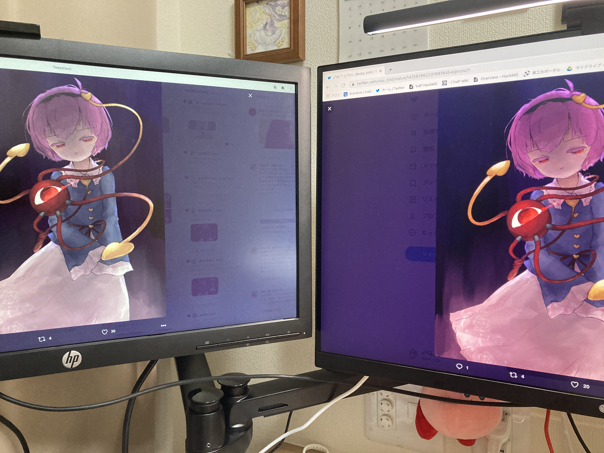

久しぶりのおえかき
やっと時間がとれました。本当は昨日描き上がってたんですけど、昨日は別の進捗があったので代わりに今日のネタに。
近寄るなかれ pic.twitter.com/Q6sRwxsXZ2
— ₍₍⁽⁽φ( '༥' )₎₎⁾⁾ (@slpp_bild) August 29, 2021
覚姉妹の姉の方。最近はﾀﾞﾝﾏｸｶｸﾞﾗで騒いでいたりしましたが、この子を描こうと思ったのはそれよりずっと前の、グルコス地霊殿イベントがきっかけです。ひょんなことから春先から魂音泉をちまちま聴いていた流れでサトリアイに沼るとともに、グルコスにナビゲーター実装されたスペルバブル版古明地さとりが可愛すぎてそのまま東方暫定最推しと化したという。せっかくなので軽いメイキングでも。

これは色ラフ。さとりちゃん二次創作漁ってると、妹の影響もあって可愛い感じの絵が多い。んだけど、🍳は「可愛い路線じゃなくてもしっくり来そうな版権美少女」とかいうすさまじいポテンシャルの高さに惚れたので、逆光オンリーとかいうホラーかな？な構図でぶん殴ることにしました。ちなみに、これの前に1枚色ラフまで終わらせた後にそんなに怖くない気がするからボツになってしまったとかいうかなしい回がありました。まあサトリアイ feat. ytrのつもりで描いてるので……。

このままだとラフすぎて線画に入れないので、1枚下書きを挟みます。この線をひたすらごりごりしてる段階が描いてて一番楽しい。伏し目まじで性癖なので伏し目似合う子最高だと思います。

線画。うにょうにょ？の作画コスト高すぎて首がもげた。平行線を2本引くのって、単純に作業量2倍なんですよね。コピペすればなんとかなるわけでもないし。ただ、冷静に考えるとキモい物体（敢えてそういう物言いをしている）が常に傍に浮いている美少女、控えめに言って素晴らしいですね。しかもコンプレックスどころか本人にとっては誇り高き能力の象徴という。なにそれ最高か？？？ごめん語彙が追いつかなくなってきた。とりあえずキャラデザが天才のそれだと思う。

ゆるゆるとパーツを塗り分けていきます。色ラフをしっかり切ってるとこの作業一瞬で終わってよき。東方キャラは服のパーツ・構造がそこまで複雑ではないのが描いてて楽でいいですね。

先にパーツごとの下地？を塗りきってしまいます。この絵は乗算と可算で影・ハイライトを何とかする予定と色ラフの時点で決まっていたので、ここでは特に何も考えず気の向くまま雰囲気で色をぺしぺし。おめめかわいい……えっち……。自分で描いた絵は自分の性癖に刺さるので自分で描いてる最中が一番大変（？？？？？）。
さて、楽しいのはここからですよ！

色ラフの時点で察しがつくように、この絵はがっつり暗くする予定です。なのでここからごりごり乗算レイヤーを追加してかわいい美少女をどんどん暗くしていきます。えっちですね。ちなみに背景とかスカートとか肌とか加筆してます。

暗いだけでも素敵なんですけど、暗いと光が映えるのです。色ラフで決めていた、上からの青い光1と下から顔を照らす光を可算レイヤーで置いていきます。ちょっとアナログ感が欲しかったのでテクスチャ強めのペンで。あとは忘れずにおめめの光も。ひゃーとってもえっち。すばらしい。
今まではプロクリエイトで作業していましたが、仕上げはaffinity photoに移動して色味の調整をします。なんか彩度が妙に高くてダサい気がしたので下げておいたのと、せっかく光源がはっきりした絵なのでコントラストをあげておいたのと。
せっかくなので完成物も置いておきましょう。ここだと多分画質下がらないですよね……？

かわいかった美少女に怖さとエモさとかっこよさが追加された、いい感じの絵になったと思います（自画自賛）。スペルバブル版のお召し物はスカートがとってもかわいいなあと思ってみてたので、いい感じにハイライト当てられてエモくできたのもよさ。がっつり逆光構図とかいう暴力ぶん投げられても様になるさとり様素晴らしい。さすが一屋敷の主といったところ。
ちなみに昨日設営したディスプレイ2枚で見比べるとこうなります。

フルHDだと彩度下げすぎて背景の色がすっ飛んでるように見えてびっくりした。やっぱり4Kで見るとなおのことかっこいい。デジ絵は複製可能だと思われがちですが、環境によって色の見え方ってぜんぜん違うので、描き手が実際に用いていた環境という点では一種の"原画"のような概念が存在するのでは、と思ったり思わなかったり。
実はカービィを経由してるおかげで単眼に対する馴染みが深いです。しかもピンク（赤）と青は2大性癖かつ手癖で描きやすい色なので、さとりちゃんまじでいろんな要素がドンピシャすぎてびっくり。性癖に合う少女は自作しないと存在しないと思ってる人間でしたけど、意外と版権にもぴったりな子っているんですね。機会があればまた描きたいなあ。
-
グルコス版のサトリアイの背景は、スペルバブルの地霊殿の画像を用いているっぽいですね。窓からの光が素敵だったので上からの青はそれを意識したものだったり。 ↩︎